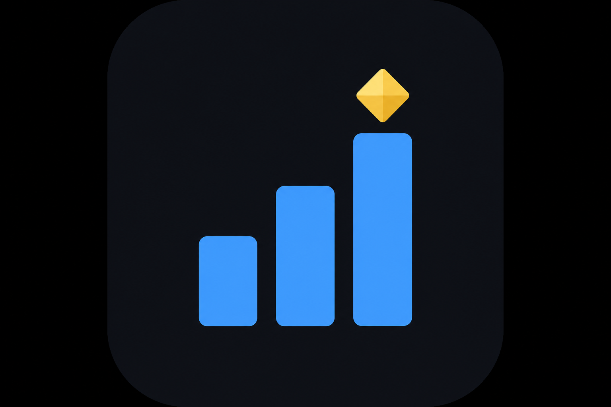

Live
Big XP/hour (held steady between game saves), gold/hour, session totals, and current map. Per-hero level and XP/hour breakdown, an XP-updated counter, scrollable history of every XP change, session reset, and an idle warning after two minutes.

TBH CompanionLive XP, gold, and Steam inventory value from your save — read-only, unofficial.
Everything in the desktop app — from live rates to chest capacity and Steam pricing.
Big XP/hour (held steady between game saves), gold/hour, session totals, and current map. Per-hero level and XP/hour breakdown, an XP-updated counter, scrollable history of every XP change, session reset, and an idle warning after two minutes.
Owned items resolved against bundled catalogs, grouped by type with composition stats. Search, filter, and sort by grade, type, location, tradable, and in-use. Steam price and value columns, location breakdown (inventory, stash, trading, equipped), and graceful handling of unknown items after game updates.
Unopened chest slots from your save: common (gray), stage boss (blue), and act boss (red). Capacity from base slots plus purchased rune nodes and settings bonuses. Full badges, progress bars, and remaining-slot counts for each category.
Pick a currency and refresh Steam Market prices. Background job runs on save load and backs off on rate limits until complete.
Frameless, always-on-top readout with XP and gold rates, current map, priced inventory total, and pricing status. Toggle from Mini in the tab bar.
Track rare boss box drops with 12-minute timers and community ideal-stage routes. Mark drops, clear timers, and see which stage you're on — open from the tab bar or Chests tab.
Edit config.json from the app: save path, poll interval, rolling window,
currency, cube XP tracking, CSV history logging, and always-on-top. Warns before
changes that reset your session.
SaveFile_Live.es3
The app watches SaveFile_Live.es3 on disk and decrypts it locally. No
connection to game servers.
Read-only access. Your save file is never written to, and the companion does not inject or automate gameplay.
Official builds are Windows NSIS installers. macOS and Linux are not packaged yet.
Fan-made tool. Not affiliated with Tesseract Studio. Does not modify your save or connect to game servers.
%USERPROFILE%\AppData\LocalLow\TesseractStudio\TBH\SaveFile_Live.es3.
You can override the path in Settings or config.json.
es3Password in
Settings (or config.json) and restart the app. See the project docs on
save format for details.
RuneSaveData add +1 slot per node (Rune of
Containment, Vault, and Infinity). Common chests can also get bonus slots from
settings. The Chests tab shows the full breakdown from your save.
%APPDATA%\tbh-companion; the NSIS installer uses
%APPDATA%\TBH Companion. That removes config, logs, and cached prices.
Your game save is untouched.
Get the latest Windows installer from GitHub Releases.
Download for WindowsRequires Windows 10 or later. Unsigned open-source build — SmartScreen may prompt on first run.